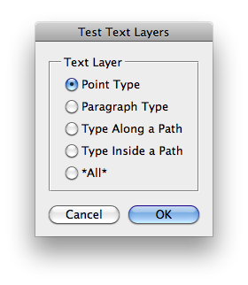

This script is part of the set of Test Scripts coming with the JSON Action Manager scripting library.
It shows how to define text layers, including multi-styled text:
Back to JSON Action Manager Test Scripts